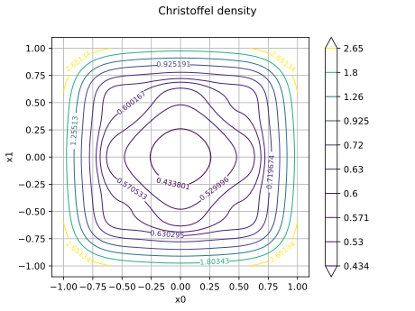

Note
Go to the end to download the full example code.
Christoffel subsampling on the square¶
# sphinx_gallery_thumbnail_number = 2
Optimal sampling draws the design points from the Christoffel distribution associated to the approximation space instead of the reference measure. On the square with a tensor Legendre basis everything is explicit, so this example reproduces the textbook picture: the optimal density concentrates at the corners, and the subsampled weighted least squares is much more accurate than uniform sampling at the same budget. The fitted expansions are polynomial chaos (functional chaos expansion) metamodels built with least squares on the sampled designs: this sampling is the design step of such a workflow. The uniform design is then recycled as a given pool for a second subsampling, and the same case is repeated with a Fourier basis to show that the workflow does not depend on the polynomial family. See Cohen and Dolbeault (Fig. 1, Sec. 6).
References¶
Albert Cohen and Matthieu Dolbeault (2020) Optimal sampling and Christoffel functions on general domains. arXiv:2010.11040, https://arxiv.org/abs/2010.11040
import openturns as ot
import openturns.experimental as otexp
import openturns.viewer as otv
ot.RandomGenerator.SetSeed(0)
We work on the square with the tensor Legendre basis. The function to approximate is a Gaussian bump, and we look at the Christoffel density of a 10-function space to see where the optimal sampling concentrates.
measure = ot.JointDistribution([ot.Uniform(-1.0, 1.0)] * 2)
basis = ot.OrthogonalBasis(ot.OrthogonalProductPolynomialFactory([ot.Uniform(-1.0, 1.0)] * 2))
spaceDimension = 10
christoffel = otexp.ChristoffelDistribution(basis, spaceDimension)
target = ot.SymbolicFunction(['x0', 'x1'], ['exp(-(x0^2 + x1^2))'])
We evaluate the normalized Christoffel function on a fine grid and draw it as a contour map. We observe that the optimal density concentrates at the corners of the square, where the Legendre polynomials take large values.
nX = nY = 80
mesh = ot.Box([nX - 2, nY - 2], ot.Interval([-1.0] * 2, [1.0] * 2)).generate()
density = christoffel.computeChristoffelFunction(mesh)
density /= spaceDimension
abscissae = ot.Sample([[-1.0 + 2.0 * i / (nX - 1)] for i in range(nX)])
contour = ot.Contour(abscissae, abscissae, density)
graph = ot.Graph("Christoffel density", "x0", "x1")
graph.add(contour)
view = otv.View(graph)

We now build a subsampled design and a uniform design with the same budget of model evaluations. The experiment works with as many basis functions as points (m = n here), and the weighted least squares expansion is fitted on that space for both designs, so the comparison is at equal cost.
budget = 60
experiment = otexp.ChristoffelSubsampleExperiment(basis, budget)
sample, weights = experiment.generateWithWeights()
uniformSample = measure.getSample(budget)
expansionSize = experiment.getSpaceDimension()
def fit(design, designWeights, expansionBasis=basis, expansionMeasure=measure, expansionSize=expansionSize):
observations = target(design)
weights = ot.Point(designWeights)
expansion = ot.LeastSquaresExpansion(design, weights, observations, expansionMeasure, expansionBasis, expansionSize)
expansion.run()
return expansion.getResult().getMetaModel()
metamodel = fit(sample, weights)
uniformMetamodel = fit(uniformSample, ot.Point(budget, 1.0))
We assess both metamodels on a large validation sample drawn from the reference measure, using the relative L2 error. We also monitor the conditioning of the weighted design Gramian on each design: it is the stability certificate of the least squares solve, and we expect it to be close to 1 on the subsampled design and much larger on the uniform one.
validation = measure.getSample(2000)
reference = target(validation)
norm = reference.computeRawMoment(2)[0] ** 0.5
error = ((metamodel(validation) - reference).computeRawMoment(2)[0]) ** 0.5 / norm
uniformError = ((uniformMetamodel(validation) - reference).computeRawMoment(2)[0]) ** 0.5 / norm
print(f"subsampled error={error:.3e} uniform error={uniformError:.3e}")
def condition(design, designWeights, designExperiment=experiment):
eigenvalues = sorted(designExperiment.computeDesignEigenvalues(design, ot.Point(designWeights)))
return eigenvalues[-1] / eigenvalues[0]
print(f"subsampled conditioning={condition(sample, weights):.3f} uniform conditioning={condition(uniformSample, [1.0] * budget):.3f}")
subsampled error=3.138e-04 uniform error=6.716e-02
subsampled conditioning=231.005 uniform conditioning=99965980734.233
In practice simulation points may already be available from a previous study. We recycle the uniform design as the candidate pool of a second subsampling: the existing points are kept and only topped up with fresh Christoffel draws before thinning. We observe that the recycled design performs like the fully subsampled one, so no evaluation is wasted.
givenSample, givenWeights = experiment.generateWithWeights(uniformSample)
givenMetamodel = fit(givenSample, list(givenWeights))
givenError = ((givenMetamodel(validation) - reference).computeRawMoment(2)[0]) ** 0.5 / norm
print(f"given-pool error={givenError:.3e} conditioning={condition(givenSample, list(givenWeights)):.3f}")
given-pool error=4.263e-04 conditioning=532.622
The workflow is not specific to polynomials. We repeat the same test case with a tensor Fourier basis: its family is orthonormal on [-pi, pi], so the experiment draws its design on that wider square and the validation is performed there as well.
fourierBasis = ot.OrthogonalBasis(ot.OrthogonalProductFunctionFactory([ot.FourierSeriesFactory()] * 2))
fourierMeasure = fourierBasis.getMeasure()
fourierExperiment = otexp.ChristoffelSubsampleExperiment(fourierBasis, budget)
fourierSample, fourierWeights = fourierExperiment.generateWithWeights()
fourierMetamodel = fit(fourierSample, fourierWeights, fourierBasis, fourierMeasure, fourierExperiment.getSpaceDimension())
fourierValidation = fourierMeasure.getSample(2000)
fourierReference = target(fourierValidation)
fourierNorm = fourierReference.computeRawMoment(2)[0] ** 0.5
fourierError = ((fourierMetamodel(fourierValidation) - fourierReference).computeRawMoment(2)[0]) ** 0.5 / fourierNorm
print(f"fourier error={fourierError:.3e} conditioning={condition(fourierSample, fourierWeights, fourierExperiment):.3f}")
fourier error=1.223e-01 conditioning=216.645
We display the three designs together. We observe that the thinned designs cluster where the Christoffel density is large, at the corners, while the uniform design covers the square evenly.
cloud = ot.Cloud(sample, "blue", "fsquare", "subsample")
uniformCloud = ot.Cloud(uniformSample, "red", "fcircle", "uniform")
givenCloud = ot.Cloud(givenSample, "green", "plus", "given-pool")
designGraph = ot.Graph("Designs", "x0", "x1")
designGraph.add(cloud)
designGraph.add(uniformCloud)
designGraph.add(givenCloud)
designGraph.setLegends(["subsample", "uniform", "given-pool"])
view = otv.View(designGraph)

Display all figures